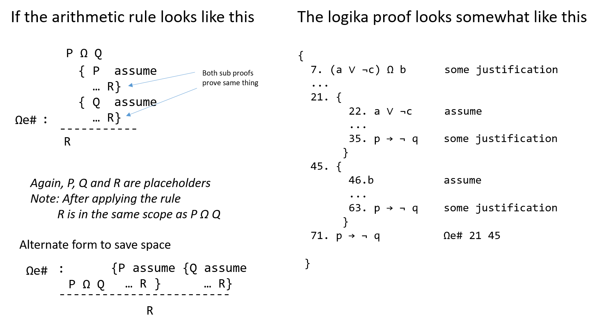

Logika: Programming Logics
3. Propositional Logic
3. Propositional Logic¶
Symbolic logic is the study of assertions (declarative statements) using the
connectives, and, or, not, implies, for all, there exists.
It is a “starter language” for stating laws for other areas.
(Example: in algebra, we use symbolic logic to declare, “for all (every)
integer(s), i, there exists an integer j such that j > i.)
Without symbolic logic, modern math, physics, philosophy, computing, and
electronics simply would not exist.
Anyone who works in one of the above-stated technical areas must be competent in using symbolic logic, and in particular, in performing deduction.
Deduction is the synthesis of new facts — consequences — from known facts.
An example: a cases analysis of the assertion that x < 0 v x > 0 lets us
deduce that x != 0 and that 1.0/x is a non-erroneous, floating-point
number.
Another example, stated in almost every logic text written in the last 50 years,
goes
All humans are mortal
and
Socrates is a human.
Therefore,
Socrates is mortal.
These examples of deduction go beyond what we can do with mere truth tables alone, and the purpose of this chapter is to provide a set of deduction rules (also known as inference rules) that you can use to deduce new facts. The rules will be written so that they can be used in math, physics, computing, etc.
We will develop the symbolic-logic rules in detail. This will allow us to start with a set of known facts (premises), apply a series of rules (operations) to them, leading to new facts, with the final fact referred to as the consequence.
We will be using Logika in manual (technically not-Auto) mode. This will require you to understand and apply the logic deduction rules in a proper order to reach the proper consequence. Part of this is to ensure you develop a proof technique and deep understanding of the logical connectives. It also helps you learn to “think like a computer”, which will assist you in programming and algorithm development.
Keep in mind that ours is a course in Formal Logic, as such the obvious is the enemy of the provable. You may become frustrated with Logika and disappointed in your grade if your proofs rely on obvious but unstated (or unproven) facts.
3.1. Propositions¶
Symbolic logic manipulates propositions, which are assertions – declarative statements that can be understood as “true” (it’s a fact) or “false” (it is not a fact).
Examples of propositions from algebra are
x > 0
y == 2*x + 1
2 > 4
The third proposition is always understood as false, whereas the first two might
be true or false, depending on the values of x and y.
Examples of propositions written in English are
Socrates is a human.
The sun is shining.
I have a million bucks in my pocket.
In English, we can also write sentences that are not propositions:
“Will it rain tomorrow?” is a question and not a true-false proposition.
We will always stay within algebra and form true-false propositions from
arithmetic operators like + and / and comparison operators like ==
and >.
The operators,
∧ (AND),
V (OR),
→ (IMPLY),
¬ (NOT),
are called propositional connectives because they connect together
propositions to make new propositions.
(Example: (x > 0 ∨ x < 0) → ¬ (2x = 0) is a proposition that connects
together x > 0, x < 0, and 2x = 0 with ¬, ∨, and →.)
Later we will study FORALL (∀) and
EXIST (∃), which are more delicate than the
propositional connectives and are called quantifiers.
3.2. The Sequent¶
Sequent is a mathematical/logical term for assertion. The notation,
|(read as, “p0, p1, …, pm entails q”) is
a sequent which asserts propositions pi let us deduce q.
The pi are called premises and q is called the consequent.
For example, x > y, y = z + 1 ⊢ x > z.
It says, “when premises x > y and y = z + 1 are accepted as facts
(true propositions), then consequent x > z is guaranteed to be a fact as
well. The ⊢ is commonly called the “turnstile” and is read as satisfies,
proves or entails. It separates what we know to be true from what we
assert can be proven.
Other nomenclatures for sequents include
antecedents ⊢ consequences
premises ⊢ conclusions
P1, ... Pn ⊢ C1, ... Cm
3.2.1. Validity of a Sequent¶
When multiple premises and conclusions are present they are treated as a conjunction. A sequent is said to be valid if, for every truth assignment which make the premises true, the conclusion is also true.
So for the sequent p → q , ¬ q ⊢ ¬ p, we can construct a table like this:

where we see that when both premises are true the conclusion is also true.
3.2.2. Logika Truth Table example¶
Logika will not support this type of proof syntax. However, with what was covered
in the natural language to propositional logic lectures and the logic gates of
chapter 2, we can see that this is an application of implication. We can say the
sequent P1, P2, ..., Pn ⊢ C1, C2, ... Cm is valid
if the logical formula (P1 ∧ P2 ∧ ... Pn ) → (C1 ∧ C2 ∧ ... Cm ) is a tautology.
Re-phrased, IF all the premises are true, THEN all consequences are true.
1 2 3 4 5 6 7 8 9 10 | *
----------------------------
p q | ((p → q) ∧ ¬ q) → ¬p
----------------------------
T T | T F F T F
T F | F F T T F
F T | T F F T T
F F | T T T T T
----------------------------
Tautology
|
This is discussed in more depth in the section on Soundness and Completeness, which comes later in this chapter.
Next consider the sequent ((p ∧ q) ∧ r) , s ∧ t ⊢ q ∧ t. Converted to a logic
formula it is (((p ∧ q) ∧ r) ∧ (s ∧ t)) → (q ∧ t), but this will require 32
rows of truth assignments. Using inferences rules will allow us to convert this
32-line truth table proof into a 6-line proof.
3.3. Inference Rules¶
The propositional connectives are a kind of data-structure language for building propositional-data-structures from basic, primitive propositions. For this reason, we must have laws for constructing the propositions and for disassembling them. These laws are called inference rules or deduction rules, and a natural deduction system is a set of inference rules, such that for each connective, there is a rule for constructing a proposition with a connective (this is called an introduction rule) and there is a rule for disassembling a proposition with the connective (this is called an elimination rule).
For the sections that follow, we will review the introduction and elimination
rules for each propositional connective, give examples of their use in proofs,
and describe strategies for applying to rules.
When we present the rules, we will use the letters, p, q, r, …,
to represent propositions (rather than use x > 0, etc., as propositions).
To prove a sequent is valid, we must supply a proof to support the claim using any relevant premises, the inference rules and deduction to write a formal proof.
3.4. Logika Proof Syntax¶
3.4.1. The Two-Column Proof¶
Sequents in Logika have the following form, where premises are separated by commas.
<0 or more premises> ⊢ < 1 consequence>
Proofs are structured in 2-columns, with facts on the left and their supporting justificaiton on the right.
premises ⊢ consequent
{
1. claim_a justification_a
2. claim_b justification_b
... ...
736. consequent justification_ef
}
Each fact is given a number, and these claim numbers are generally in order. However, the only rule is that claim numbers be unique (they may be out of order and/or non-consecutive). Also, by convention the consequence is proven on the last line, but again this is not strictly required.
Justifications are either:
| type | cases |
|---|---|
| blank | {, }, variable introduction |
| one-word | “assume”, “premise” |
| rule + claim nos | ex: ∧i 1 2 AND-intro using claims 1 and 2 |
3.4.2. Scope and Use of Subproofs¶
Sub-proofs are tools for case analysis or what-if excursions, used to support justification for later claims. In propositional logic, they will always contain one assumption. (In prepositional logic, their use will be expanded) This assumption is a proposition which is “local” to the sub-proof.
As a general rule, you cannot prove at the end of a sub proof the fact you assumed at the start. Assumed facts should be chosen, so that when combined with existing facts and rules, some other claim can be made at the conclusion of the sub-proof.
Scope¶
Opening and closing braces ({}) define the scope of claims. Other than the
first { which goes directly under the sequent, the opening brace is given
a claim number, but no justification. Closing braces are not given claim numbers.
The use of braces is analogous to their use to define scope in Java, C# and C.
premises ⊢ consequent
{
1. fact_A justification_1
... ...
17. {
18. fact_ D assumption
... ...
25. fact_G some_rule using claim 1 // this is ok
... ...
}
... ...
45. fact_R some_rule using claim 25 // this is not ok
}
In the example above, the sub-proof starting on line 17, creates an environment where fact_D is true. The justification used on claim number 25, which uses claim 1, is valid. The scope of claim 1 encloses (includes) sub-proof 17.
However, the justification for line number 45 is invalid. Fact_G on line number 25, was proven true in an environment where fact_D is true (ie sub-proof 17). That environment ends, falls out of scope, when the closing brace for the sub-proof is reached. This happens before line 45.
Only specific justifications, or inference rules, allow you to close a scope and create a new claim based on that sub proof in the enclosing (outer) scope. These justifications always take a sub-proof (i.e “17”) as justification.
Use¶
When a justification requires a sub-proof, the sub-proof is referred to by the
line number of its opening brace ({), not the line number of the
sub-proof’s concluding claim.
3.5. The premise Justification¶
Now we will begin introducing inference rules/justifications which allow you to prove a sequent’s validity through a series of truth preserving operations. The most basic is the statement of premises in your proof so they can be used.
As shown below, the claim is just the fact with “premise” as the justification. All, some or none of the premises can be introduced at any time in any order. Please note that only one premise may be entered per claim.
1 2 3 4 5 6 7 8 9 10 11 12 13 14 15 16 17 18 19 20 | //This is ok
p, q, ¬ r ⊢ p
{
7. q premise
2. p premise
4. p premise
11. ¬ r premise
}
//This is also ok
p, q, ¬ r ⊢ p
{
11. ¬ r premise
}
// This is wrong
p, q, ¬ r ⊢ p
{
11.p, q, ¬ r premise
}
|
Occasionally you may wish (or need) to restate a claim from an outer proof in a sub proof. If the claim you wish to restate is in scope, you may restate the claim using “premise” as the justification. This may make your proof more human readable.
3.6. The assume Justification¶
To make an assumption, you must start a new sub-proof and the assumption must
be the first claim in the sub-proof. Any proposition can be assumed. The
propositions p and ¬ q ∨ p ∧ t→ p are both valid assumptions. Inside
the sub-proof, the assumed proposition can be treated as a fact.
3.7. Logical Operator Based Justifications¶
3.7.1. Syntax¶
It is a tradition to draw the rules as a kind of “arithmetic sum-up expression”: when we have proof of the propositions above the horizontal bar, then we deduce the proposition below the bar.
The less complex rules do not include sub-proofs and have this general format.
{kind=link}
More complicated rules will involve sub-proofs and typically follow this pattern. Placeholders will be used to guide you on what must be assumed for each sub-proof.
{kind=link}
Some important things to keep in mind are:
- Capital letters in arithmetic representations are PLACEHOLDERS not variable names.
- Only certain rules (those with sub-proofs) let you exit a sub-proof and prove a new fact based on the sub-proof in the enclosing scope.
3.8. And-Introduction and And-Elimination¶
It is easy to work with the conjunction connective, ∧.
Clearly, p, q ⊢ p ∧ q, that is, when both p and q are facts, then
so is the proposition, p ∧ q.
Dually, we accept that p ∧ q ⊢ p as well as p ∧ q ⊢ q.
Here are the deduction rules that formalize these intuitions:
3.8.1. Rules¶
P
Q P ∧ Q P ∧ Q
∧i : --------- ∧e1 : --------- ∧e2 : ---------
P ∧ Q P Q
The rules are used to build proofs of new facts from starting facts (premises). The examples will explain the exact syntax.
3.8.2. Examples¶
p, q, r ⊢ r ∧ (q ∧ p)
{
1. p premise
2. q premise
3. r premise
4. q ∧ p ∧i 2 1
5. r ∧ (q ∧ p) ∧i 3 4
}
Read line 4 like this: “from the fact stated on line 2 and the fact stated on
line 1, we deduce q ∧ p by applying the ∧i law”.
Lines 4 and 5 construct new facts from the starting facts (premises) on
lines 1-3.
A proof generates new knowledge from existing knowledge by using deduction
rules.
p ∧ (q ∧ r) ⊢ r ∧ p
{
1. p ∧ (q ∧ r) premise
2. p ∧e1 1
3. q ∧ r ∧e2 1
4. r ∧e2 3
5. r ∧ p ∧i 4 2
}
The two examples seen so far suggest that a proposition like r ∧ p is like
a list, (r, p), in C# that we can disassemble by indexing.
The ∧e rule does the indexing, and the ∧i-does the list-building.
p ⊢ p ∧ p
{
1. p premise
2. p ∧ p ∧i 1 1
}
This example shows you can use a premise multiple times in a proof.
It is easy to prove p ∧ q ⊢ p (use ∧e1), but we cannot prove
p ⊢ p ∧ q.
This reminds us that deduction rules develop new knowledge, but the knowledge
might be weaker than the starting facts used to deduce the knowledge.
When we have propositions p and q and we prove both
p ⊢ q and also q ⊢ p, we write
p ⇔ q and say that p and q are equivalent – they hold the
“same amounts of knowledge”.
3.8.3. Tactics¶
A tactic is a useful step towards proving a goal. The rules for conjunction come with these two tactics, which we rate from (*) to (***) based on their utility:
(***)
∧i-tactic: If your task is to provepremises ⊢ p ∧ q, then- prove
Premises ⊢ p - prove
Premises ⊢ q - use
∧i.
The proof you are building looks like this
1. Premises premise (fill in) i. p (fill in) j. q k. p ∧ q ∧i i j- prove
(**)
∧e-tactic: If your task is to provePremises ⊢ rand you have as a premise or proved fact in your partial proof,p ∧ q, then apply∧eto extractpandqto use in the proof1. Premises premise . . . i. p ∧ q premise i+1. p ∧e1 i i+2. q ∧e2 i (fill in) j. r
Let’s apply the tactics to one of the previous examples:
prove
p ∧ (q ∧ r) ⊢ r∧ p: Use the (***)-∧itactic to generate two subgoals,p ∧ (q ∧ r) ⊢ rand alsop ∧ (q ∧ r) ⊢ p1. p ∧ (q ∧ r) premises (fill in) i. r (fill in) j. P j+1. r∧ p ∧i i jSince the (***)-tactic can’t be used on either subgoal, apply the (**)-
∧e-tactic to the premise1. p ∧ (q ∧ r) premise 2. p ∧e1 1 // (succeeded in proving subgoal, P) 3. q ∧ r ∧e2 1 (fill in) i. r i+1. r∧ p ∧i i 2We can prove the remaining subgoal by applying the
∧e-tactic once more1. p ∧ (q ∧ r) premises 2. p ∧e1 1 // (succeeded in proving subgoal, P) 3. q ∧ r ∧e2 1 4. r ∧e2 3 // (succeeded in proving subgoal, r) 5. r∧ p ∧i 4 2
3.8.4. Logika Tips¶
You have to understand the order of precedence for operations. A former GTA described is as “seeing the invisible parentheses”. Consider:
p ∧ q ∧ r ⊢ r p ∧ q ∧ r ⊢ r
{ {
1. p ∧ q ∧ r premise 1. p ∧ q ∧ r premise
2. p ∧e1 1 2. r ∧e2 1
} }
// does not work // works
The fact that Logika will not accept line 2 is can be irritating. One must recall
that p ∧ q ∧ r is really (p ∧ q) ∧ r (from the order of precedence), and
thus can be split into (p ∧ q) ∧e1 or r ∧e2.
3.9. Or-Introduction and Or-Elimination¶
It is a bit trickier reasoning about disjunction, ∨,
because there are multiple meanings of the word in English.
We use the meaning “one or the other or both”.
This causes us to accept the entailments, p ⊢ p ∨ q and q ⊢ p ∨ q
(as well as p ⊢ p ∨ p), which give us the two versions of the ∨i
deduction rule, seen below.
There must also be a rule for applying a fact of form, p ∨ q, to deduce new
knowledge.
In real life, we call the rule “case analysis”.
For example, say that you have either 4 quarters in your pocket or 10 dimes in
your pocket.
In either case, you can buy a one-dollar coffee.
Why?
You do a case analysis:
- In the case you have 4 quarters, that totals a dollar, and you can buy the coffee;
- In the case you have 10 dimes, that totals a dollar, and you can buy the coffee.
So, in both cases, you can buy the coffee. (Actually, the cheapest coffee in the student union is more like $2.)
This pattern of deduction is formalized in the ∨e-rule below.
3.9.1. Rules¶
{ P assume { Q assume
P Q P ∨ Q ... R } ... R }
∨i1 : -------- ∨i2 : -------- ∨e: ------------------------------------
P ∨ Q P ∨ Q R
The ∨e-rule is the deduction-rule form of case analysis: you assume p
and do deductions that prove r and then you assume q and do another
sequence of deductions to reprove r.
Each case is a “subproof” that is indented with braces.
Once both cases are proved, you conclude r no matter what. The introduction and
elimination rules will be expanded on in the next section.
3.9.2. Examples¶
p ⊢ q ∨ p
{
1. p premise
2. q ∨ p ∨i2 1
}
Perhaps it seems strange to “weaken” fact p by attaching q to it.
Yet, we do this all the time.
For example, when we say, “today is Tuesday, so today is a weekday”, we have
weakened “today is Tuesday” to “today is Monday or Tuesday or … or Friday”.
In math, we might have that x > 0, so we conclude that x != 0, that is,
x > 0 ⊢ (x < 0) ∨ (x > 0).
What is more interesting is that proposition q in the above proof can be any
proposition, and it need not be a true fact (p is the fact that matters
here).
For example, we can prove 2 == 1 + 1 ⊢ (2 == 1 + 1) ∨ (1 == 0).
This sequent is valid, because it is enough that 2 == 1 + 1 is a fact;
literally, 1 == 0 does not matter.
A similar result goes
p ∧ q ⊢ p ∨ q
{
1. p ∧ q premise
2. p ∧e1 1
3. p ∨ q ∨i1 2
}
For that matter, we reprove this result using ∧e2
p ∧ q ⊢ p ∨ q
{
1. p ∧ q premise
2. q ∧e2 1
3. p ∨ q ∨i2 2
}
We cannot prove p ∨ q ⊢ p ∧ q, which clearly shows that the ∨i rule
generates “weaker knowledge” from its facts.
Here is a proof that uses case analysis — ∨e — to prove a useful sequent.
p ∨ q, r ⊢ (p ∧ r) ∨ (q ∧ r)
{
1. p ∨ q premise
2. r premise
3. {
4. p assume // (the first case for line 1)
5. p ∧ r ∧i 4 2
6. (p ∧ r) ∨ (q ∧ r) ∨i1 5
}
7. {
8. q assume // (the second case for line 1)
9. q ∧ r ∧i 8 2
10. (p ∧ r) ∨ (q ∧ r) ∨i2 9
}
11. (p ∧ r) ∨ (q ∧ r) ∨e 1 3 7
}
Each case — the p case and the q case — proved the same fact, so
we conclude that the fact holds no matter what.
Both subproofs must prove the same fact, and then the ∨e rule finishes the
proof.
Here, line 11 states that, starting from the cases asserted on line 1, the proof
that p proves the goal is stated in lines 4-6 and the proof that q
proves the goal is stated in lines 8-10.
The assumption on line 4 (and the one on line 8) acts like a local variable inside a function – it can be used only within the function’s body. This is because the assumption is a what-if premise that is used only for the sake of discussion of the case.
Finally, here is a simple but vital proof
p ∨ p ⊢ p
{
1. p ∨ p premise
2. {
3. p assume
}
4. {
5. p assume
}
6. p ∨e 1 2 4
}
3.9.3. Tactics¶
There is one good tactic, and one not-so-good:
(***)
∨e-tactic: To provePremises ⊢ r, ifp ∨ qappears as a premise or proved fact in the partial proof, then- prove
Premises, p ⊢ r - prove
Premises, q ⊢ r - use the
∨e-rule to prover.
The proof is structured like this
1. Premises premise . . . i. p ∨ q j. { k. p assume (fill in) l. r } m. { n. q assume (fill in) o. r } p. r ∨e i j m- prove
(*)
∨i-tactic: To provePremises ⊢ p ∨ q, pick either ofporq, and try to prove it. Finish with∨i1. Premises premise (fill in) i. P j. p ∨ q ∨i1 i
If you examine the previous proof example, you see that the proof was
constructed by applying the ∨e tactic, which made possible the use of the
∧i tactic upon the two subgoals.
The ∨i tactic is used only when it is clear that it will yield progress
towards the goal.
3.9.4. Logika Tips¶
Proving the exact same fact means exact. Proving p ∧ r in the first subproof
and r ∧ p in the second will not work. From the Logika standpoint, these
are different (at least in manual mode).
3.10. Implies-Introduction and Implies-Elimination¶
Remember that → is a kind of “logical if-then”.
The word “implies” has several shadings of meaning in spoken English, and there
are also multiple meanings of the word in logic.
Here, we understand p → q to assert that p holds knowledge sufficient
to deduce q – so, whenever p is proved to be a fact, then p → q
enables q to be proved a fact, too.
With this understanding, it is easy to accept that p, p → q ⊢ q;
this yields the →e rule.
But there must also be a rule for building propositions of the form,
p → q.
Say that a family of propositions, p, r, s, t, … are enough to
prove proposition, q.
Say we know that r, s, t, … are facts.
Thus, if we only knew that p was a fact, too, then we would have q as a
fact.
In this sense, r, s, t, … are enough to prove that p → q
is a fact.
Stated more precisely, the situation where p, r, s, t, ... ⊢ q lets us
conclude that r, s, t, ... ⊢ p → q.
These two ideas, which go hand in hand, are formalized below.
3.10.1. Rules¶
{ P assume P → Q
... Q } P
→i : -------------- →e : ------------
P → Q Q
The →i-rule is a case analysis – it says, consider the case when p is
a fact.
(We don’t know this for certain; it is a case/possibility we want to discuss.)
If assuming p (plus using other facts we already have) leads to a proof of
q, then we conclude that p → q is a fact.
3.10.2. Examples¶
Here are two simple uses of →e
(p ∧ q) → r, p → q, p ⊢ r
{
1. (p ∧ q) → r premise
2. p premise
3. p → q premise
4. q →e 3 2
5. p ∧ q ∧i 2 4
6. r →e 1 5
}
(p ∨ q) → r, q ⊢ r
{
1. (p ∨ q) → r premise
2. q premise
3. p ∨ q ∨i2 2
4. r →e 1 3
}
Here is an example that uses →i
p, (q ∧ p) → r ⊢ q → r
{
1. p premise
2. (q ∧ p) → r premise
3. {
4. q assume
5. q ∧ p ∧i 4 1
6. r →e 2 5
}
7. q → r →i 3
}
The proof includes the case that, when q is assumed a fact then r would
follow as a fact, too.
The subproof lets us conclude that q → r is a fact.
Here, two if-then facts entail a third one
p → q, q → r ⊢ p → r
{
1. p → q premise
2. q → r premise
3. {
4. p assume
5. q →e 1 4
6. r →e 2 5
}
7. p → r →i 3
}
Notice how we assumed p to move the proof forwards to a proof of r.
We employ a similar tactic in this example
p → (q → r) ⊢ (q ∧ p) → r
{
1. p → (q → r) premise
2. {
3. q ∧ p assume
4. p ∧e2 3
5. q → r →e 1 4
6. q ∧e1 3
7. r →e 5 6
}
8. (q ∧ p) → r →i 2
}
It is possible to nest cases-analyses, as in this crucial example
p → r, q → r ⊢ (p ∨ q) → r
{
1. p → r premise
2. q → r premise
3. {
4. p ∨ q assume
5. {
6. p assume
7. r →e 1 6
}
8. {
9. q assume
10. r →e 2 9
}
11. r ∨e 4 5 8
}
12. (p ∨ q) → r →i 3
}
Here, the “or reasoning” is nested inside the “implies reasoning”. This example shows how mastery of basic deduction rules allows one to reason far more precisely than ordinary people do in real life.
3.10.3. Tactics¶
Implication comes with two good tactics:
(***)
→i-tactic: To provePremises ⊢ p → q,- assume
p - prove
Premises, p ⊢ q - use
→i.
The proof structure looks like this
1. Premises premise . . . j. { k. p assume (fill in) l. q } m. p → q →i j- assume
(*)
→e-tactic: To provePremises ⊢ r, ifp → qappears as a premise or a proved fact in the partial proof, then- prove
Premises ⊢ p - use
→eto deduceq - prove
Premises, P, q ⊢ r.
Here, the tactic is to generate new knowledge that will bring us closer to the goal,
r.1. Premises premise . . . i. p → q (fill in) j. P k. q →e i j (fill in) k. r- prove
In an earlier proof example, you see an immediate use of the (***)-→i
tactic to the new subgoal
p → (q → r), q ∧ p ⊢ r
An easy application of the (**)-∧i tactic generates this simpler subgoal
p → (q → r), q, p ⊢ r
and we quickly finish the proof by applying the (*)-→e tactic twice to
deduce r.
3.11. Negation¶
The word, “not”, has many shadings in English, and this is also true in logic.
We might read ¬ p as saying, “p is not a fact”, or “the opposite of p
is a fact”, or “p can never be a fact”, or “it is impossible for p to be
a fact”, or “p is ruled out”, or even “p is false”.
The choice of deduction rules will decide the precise meaning of ¬ p.
What is clearcut, however, is that whenever we can prove, p and also ¬ p,
for some proposition, p, we have a contradiction.
A contradiction states an impossible situation, that is, p is a fact at the
same time that it is not a fact.
It is a “crash”, “the end of the world (or at least of the proof!)”.
3.11.1. Rules¶
We use this symbol — ⊥ (Logika Symbol: False) — to stand for a
contradiction.
There is an extra rule to deduce you have proved a contradiction
P
¬ P
¬ e : -----------
⊥
(The name is not ideal, but we will use it anyway.)
If you start from some premises and you prove a contradiction, it means that the
premises disagree with each other.
(For example, from premises x > 0 and x < 0 we can deduce
x > 0 ∧ ¬ (x > 0).
The problem is that the premises disagree about what is true at the start.)
When we encounter a contradiction in real life, we usually “start over” and try our reasoning again, from a different set of premises. In logic, contradictions are not only a signal that we should “start over” (that is, change the premises of the proof we are building), but they are also useful for finishing a line of logical reasoning where we must consider all cases, even the impossible ones, that follow from some starting set of premises.
There is a special law for reasoning forwards from an impossible situation —
the ⊥e law — which says, in the case of a contradiction, everything
becomes a fact. (That is, “if False is a fact, so is everything else!”.)
⊥
⊥e : ------ for any proposition, Q, at all
Q
3.11.2. Examples¶
The ⊥e-rule works well with case analysis, where we discover that one case
is impossible.
Here is the classic example
p ∨ q, ¬ p ⊢ q
{
1. p ∨ q premise
2. ¬ p premise
3. {
4. p assume
5. ⊥ ¬e 4 2
6. q ⊥e 5
}
7. {
8. q assume
}
9. q ∨e 1 3 7
}
Considering the premise, p ∨ q, we develop the two-case analysis.
The first case, where p holds true, is impossible, because it causes a
contradiction.
The ⊥e-rule lets us gracefully prove q in this “impossible case”.
(You can read lines 4-6 as saying, “in the case when p might hold true,
there is a contradiction, and in such an impossible situation, we can deduce
whatever we like, so we deduce q to finish this impossible case”.)
The second case, that q holds true, is the only realistic case, and it
immediately yields the consequent.
The proof finishes the two-case analysis with a step of ∨e.
In the ¬e rule, the positive (not negated) claim goes first.
Here is another example
p → ⊥ ⊢ p → r
{
1. p → ⊥ premise
2. {
3. p assume
4. ⊥ →e 1 3
5. r ⊥e 4
}
6. p → r →i 2
}
The sequent can be read as, “if p generates a contradiction, then p
generates anything we want!”.
Here is a more interesting variation
¬ p ⊢ p → q
{
1. ¬ p premise
2. {
3. p assume
4. ⊥ ¬e 3 1
5. q ⊥e 4
}
6. p → q →i 2
}
That is, if p is impossible, we can make any old if-then claim we want about
would follow if p somehow became a fact.
(Example: “if I am the president of the U.S., then everyone gets a tax refund of
a million bucks”. It’s a true statement but not so useful, since I am not the
president and will never be.)
3.11.3. Tactic¶
- (*)
⊥-tactic: To provePremises ⊢ q, if¬ pappears as a premise or as a proved fact in our partial proof, then- prove
Premises ⊢ p - use
¬ eto deduce⊥ - use the
⊥e-rule to deduceq.
- prove
The structure is
1. Premises premise
. . .
i. ¬ P
(fill in)
j. P
k. ⊥ ¬ e i j
l. q ⊥e k
In the previous proof example, we see that ¬ p ⊢ p → q is proved quickly
once we obtain as a new fact (via an assumption, thanks to the (***)-→i
tactic!).
3.12. Negation Introduction¶
Another rule for negation lets us deduce when an assertion is incompatible with facts we already know.
For example, say that q, r, s, … are some premises that we have
used to prove facts.
Say we add p to the premise set, but it is incompatible, that is, we prove,
q, r, s, ..., p ⊢ ⊥.
So, in a world where q, r, s, … are facts, p can never be a
fact – we have q, r, s, ... ⊢ ¬ p.
3.12.1. Rule¶
{ P assume
... ⊥ }
¬ i: --------------
¬ P
The rule says that we can discuss the case when p holds; if a contradiction
results, then it is impossible for p to ever be a fact – indeed, ¬ p is
the fact that holds.
3.12.2. Examples¶
p, q → ¬ p ⊢ ¬ q
{
1. p premise
2. q → ¬ p premise
3. {
4. q assume
5. ¬ p →e 2 4
6. ⊥ ¬e 1 5
}
7. ¬ q ¬i 3
}
Here, the premises, p and q → ¬ p, are so strong that it is impossible
for q to ever be proved as a fact.
(Lines 4-5 show that, if q ever was proved a fact, it would cause a
contradiction/crash.)
So, ¬ q (“q is impossible”) is proved, instead.
p ⊢ ¬ ¬ p
{
1. p premise
2. {
3. ¬ p assume
4. ⊥ ¬e 1 3
}
5. ¬ (¬ p) ¬i 2
}
Note that the ¬ i rule is not capable of proving ¬ ¬ p ⊢ p.
Indeed, if “it is impossible that it is impossible for p to be a fact”, does
this mean that p (is proved to be) a fact?
(Example: Last night, you came home late and used your keys to enter your
apartment.
This morning, you can’t find your keys.
You say, “It’s not that I don’t have my keys!”
But do you have them in hand – do you have the evidence that you have your
keys
In mathematics, there are number problems where people have proved that it is
impossible for there not to be a solution.
But no one yet knows exactly what the solution is!)
These examples support this understanding of ¬ p
¬ psays that “pis impossible”
The three rules, ⊥e, ¬ i, and ¬ e, give the meaning of
“is impossible” to the operator, ¬.
3.12.3. Tactic¶
The (***)-¬ i tactic says, to prove Premises ⊢ ¬ p,
- assume
p - prove
Premises, p ⊢ ⊥ - use
¬ i
1. Premises premises
. . .
j. {
k. p assume
(fill in)
l. ⊥
}
m. ¬ p ¬ i j
The ¬ i-tactic was used with good success in the previous example.
3.13. Proof by Contradiction¶
In circuit theory, the not-gate is a “flipper” – it flips low voltage to high
and vice versa.
In integer arithmetic, the negative symbol flips positive ints to negatives and
vice versa.
In these areas, for a datum, D, the phrase, ¬ D, means the “opposite of”
or the “complement of” D.
In real life, we use opposites a lot – the opposite of daytime is nighttime,
the opposite of happy is sad, and so on.
We might even say that ¬ daytime equals nighttime, and so on.
But what is ¬ raining? Does it equal sunny? overcast? snowing?
Some concepts have no natural opposite.
If we work with circuits or similar True/False or “opposite” systems, then we
should be able to prove ¬ ¬ p ⊢ p.
Here is the rule that lets us do so:
3.13.1. Rule¶
{ ¬ P assume
... ⊥ }
pbc: ---------------
P
The pbc (“proof by contradiction”) rule says that, when ¬ p leads to a
contradiction, then we have built a proof of p.
That is, when “p is impossible” is impossible, pbc concludes not
only that “p is possible” but that “p is a certainty” –
a fact.
In a sense, pbc builds “something from nothing” – a “proof” of “fact” p
from an argument that says ¬ p leads to an impossible situation.
But does this mean we have “built” p?
In a world where the word “not” means the “opposite of”, we have.
3.13.2. Examples¶
¬ ¬ p ⊢ p
{
1. ¬ ¬ p premise
2. {
3. ¬ p assume
4. ⊥ ¬e 3 1
}
5. p pbc 2
}
¬ (¬ p ∨ ¬ q) ⊢ p ∧ q
{
1. ¬ (¬ p ∨ ¬ q) premise
2. {
3. ¬ p assume
4. ¬ p ∨ ¬ q ∨i1 3
5. ⊥ ¬e 4 1
}
6. p pbc 2
7. {
8. ¬ q assume
9. ¬ p ∨ ¬ q ∨i2 8
10. ⊥ ¬e 9 1
}
11. q pbc 7
12. p ∧ q ∧i 6 11
}
Here is a famous consequence of pbc: from no starting premises at all, we
can prove p ∨ ¬ p for any proposition we can imagine.
⊢ p ∨ ¬ p
{
1. {
2. ¬ (p ∨ ¬ p) assume
3. {
4. p assume
5. p ∨ ¬ p ∨i1 4
6. ⊥ ¬e 5 2
}
7. ¬ p ¬i 3
8. p ∨ ¬ p ∨i2 7
9. ⊥ ¬e 8 2
}
10. p ∨ ¬ p pbc 1
}
This is sometimes referred to as the law of the excluded middle (LEM) as p
is either true or false. There is no third possibility (hence excluded middle).
Now that we have done this proof, say that p stands for “God has red hair”.
We have this result:
⊢ "God has red hair" ∨ ¬ ("God has red hair")
Do you accept this?
Perhaps the pbc rule is not so well suited for deductions in the world of
theology.
A similar example is this one: let p stand for “I have stopped kicking my
dog”.
(But perhaps I do not even have a pet, let alone ever kicked one!)
pbc constructs “something from nothing”.
This appeals to circuit builders, where ¬ and ∨ are just gates/on-off
switches, but not always to computer scientists, who like to compute/build data
values and data structures in constructive ways, with algorithms.
For this reason, some logicians (actually, not so many) refuse to accept the
pbc rule, except in specific circumstances.
Typically, when people accept that ⊢ p ∨ ¬ p is a fact, it is because they
are using a decision procedure to answer the question.
When we consider situations that do not have decision procedures, the situation
gets murky, as in the example about the color of God’s hair.
Here is a surprising result, due to pbc
p → q ⊢ ¬ p ∨ q
{
1. p → q premise
2. { // start of previous p ∨ ¬ p proof
3. ¬ (p ∨ ¬ p) assume
4. {
5. p assume
6. p ∨ ¬ p ∨i1 5
7. ⊥ ¬e 6 3
}
8. ¬ p ¬i 4
9. p ∨ ¬ p ∨i2 8
10. ⊥ ¬e 9 3
}
11. p ∨ ¬ p pbc 2 // conclusion of p ∨ ¬ p proof
12. {
13. p assume
14. q →e 1 13
15. ¬ p ∨ q ∨i2 14
}
16. {
17. ¬ p assume
18. ¬ p ∨ q ∨i1 17
}
19. ¬ p ∨ q ∨e 11 12 16
}
This proof says that the dependency of q on p forces us to conclude that
either q is already a fact or p is impossible.
It is slightly odd that an “if-then” dependency would ensure either of the two
outcomes.
But this is the consequence of pbc’s ability to build something from nothing.
This result also relies on pbc
⊢ (p → q) ∨ (q → P)
for any choice whatsover of propositions p and q.
(An example: let p stand for “It is raining” and q stand for
“I am the President”.
The above sequent holds true, even though there is no dependency between the two
propositions.
Why is that so?
Is it reasonable?
The claim looks more benign when we restrict p and q to be propositions
about logic gates.
The moral is, certain logic rules are meant for certain application areas, and
the pbc rule works well in only circuit-theory-like worlds.)
This last result follows because pbc lets us deduce that
p → q ⊢ ¬ p ∨ q – no longer does p → q tell us that p gives the
needed knowledge for constructing/deducing q;
no longer does p → q tell us that q physically depends on p.
Instead, due to pbc, we must read p → q as stating a coincidence about
the underlying True/False values of p and q.
For this reason, the → operator is no longer necessary in a logic that
uses the pbc rule;
this is why there is no need for an → gate in circuit theory (you use
¬ p ∨ q instead).
There is no truly useful tactic for applying the pbc-rule.
It is indeed a rule of “last resort”, because it says, to try to prove
Premises ⊢ p, one should assume ¬ p and see if this leads one into a
contradiction, that is, a proof that Premises, ¬ p ⊢ ⊥.
This is a kind of logical “wild-goose chase”.
But later in the chapter, we will see how computers can be made to chase after
such geese.
3.14. Important Equivalences¶
These useful equivalences can be proved with the laws for And and Or:
p ∨ p ⇔ pp ∧ p ⇔ pp ∨ q ⇔ q ∨ pp ∧ q ⇔ q ∧ p(p ∨ q) ∨ r⇔ p ∨ (q ∨ r)(p ∧ q) ∧ r⇔ p ∧ (q ∧ r)(p ∨ q) ∧ r⇔ (p ∧ r) ∨ (q ∧ r)(p ∧ q) ∨ r⇔ (p ∨ r) ∧ (q ∨ r) p
If you are an algebraist, you already knew these assertions, which characterize a distributive lattice.
When we add the rules for implies, we can prove one other key equivalence:
(p ∧ q) → r⇔ p → (q → r)
When we add the ¬ e, ⊥e, and ¬ i rules, we can also prove:
¬ (p ∨ q) ⇔ ¬ p ∧ ¬ q¬ (p ∨ q) ⇔ ¬ (¬ p → q)(p → ¬ q) ⇔ ¬ (p ∧ q)(p → ¬ q) ⇔ (¬ P) ∨ q¬ p ⇔ p → ⊥¬ p ⇔ ¬ ¬ ¬ p
Now we have characterized what algebraists call the Heyting lattices.
If we accept pbc (or equivalently, we accept p ∨ ¬ p as a fact), then we
have these important results:
(Note, for each equivalence, ⇔, that follows, the first part, stated with
⊢, can be proved without pbc, but the reverse direction requires
pbc.)
p ⇔ ¬ ¬ pp ∧ q ⇔ ¬ (¬ p ∨ ¬ q)p ∨ q ⇔ ¬ (¬ p ∧ ¬ q)p ∨ q ⇔ ¬ p → q¬ p ∨ ¬ q ⇔ ¬ (p ∧ q)¬ p ∨ q ⇔ p → qp → q ⇔ ¬ q → ¬ pp → q ⇔ ¬ (p ∧ ¬ q)(B ∧ P) ∨ (¬ B ∧ q) ⇔ (B → P) ∧ (¬ B → q)
In algebra, the inference rules presented here for ∧, ∨, ⊥, and
¬ define the structure of a Boolean lattice, and the origins of modern
abstract algebra and logic come from George Boole’s attempt to formalize
“what it means” to compute with ∧, ∨, ¬.
3.15. Models of Propositional Logic: Soundness and Completeness¶
When we say that “p is a fact”, what does this mean?
Perhaps it means “p is True”, or “p is proved”, or “our confidence in
p is absolute”.
The purpose of this section is to describe ways that we give meaning to propositions and to show that the deduction rules in this chapter generate new knowledge that means what we think it means.
The most basic interpretation of propositions is that a proposition means either
True (T, 1) or False (F, 0).
This is a “circuit theory” interpretation.
In this situation, the meanings of the connectives, ∧, ∨, ¬ are
given by the truth tables in the Chapter on Circuits and Truth Tables.
Return to the Chapter on Circuits and Truth Tables of these notes and review the truth tables for
∧, ∨, ¬.
A truth table defines how the “inputs” p and q are converted into
“outputs”.
Next, here is the standard truth table for →
*
--------------
p q | p → q
--------------
T T | T
T F | F
F T | T
F F | T
-------------
Contingent:
- T : [T T] [F T][F F]
- F : [F T]
The table’s last two rows are a bit surprising – indeed, neither T nor
F seem exactly correct as outputs here!
Think of p → q as “the truth of “p forces the truth of q”.
So, when p is F, then q is not forced to be anything at all.
This makes T a reasonable answer for the last two rows of the table.
In a more technical sense, the values in the last two rows connect to our
ability to prove ¬ p ⊢ p → q and also ¬ p ⊢ p → ¬ q –
they relate to our willingness to consider impossible cases (and embrace the
⊥e rule).
Nonetheless, we see that our understanding of implication as a truth table is open to discussion.
Recall that we can build a truth table of a compound proposition.
We can do this for any sequent, computing the values of its premises and its
goal.
Here is an example: the sequent p, q v r ⊢ (p ∧ q) v (p ∧ r) can be
translated as p ∧ (q v r) → (p ∧ q) v (p ∧ r) and the following truth
table can be constructed
*
---------------------------------------------
p q r | p ∧ (q v r) → (p ∧ q) v (p ∧ r)
--------------------------------------------
T T T | T T T T T T
T T F | T T T T T F
T F T | T T T F T T
T F F | F F T F F F
F T T | F T T F F F
F T F | F T T F F F
F F T | F T T F F F
F F F | F F T F F F
--------------------------------------------
Tautology
According to the truth table, p, q ∨ s entails
(p ∧ q) ∨ (p ∧ r), because, in every row where both p and also q ∨ r
compute to T, then so does (p ∧ q) ∨ (p ∧ r).
We can of course use the deduction rules to build a proof of
p, q ∨ r ⊢ (p ∧ q) ∨ (p ∧ r).
Now, we have two questions:
- soundness: When we use the deduction rules to prove that
P1, P2, ..., Pn ⊢ q, does this mean that the compound truth table also shows thatP1, P2, ..., Pnentailsq? - completeness: When we use a compound truth table and calculate that
P1, P2, ..., Pnentailsq, does this mean we can use the deduction rules to build a proof thatP1, P2, ..., Pn ⊢ q?
When we use all the inference rules presented in this chapter (that is, ∧i,
∧e, ∨i, ∨e, →i, →e, ⊥e, ¬ i, ¬ e, pbc)
then the short answer to both questions is “yes”.
The inference rules encode completely all the information within truth tables,
and truth tables decode all the deductions of inference rules.
Because of soundness and completeness, one way to determine whether there is a
proof for a sequent, P1, P2, ..., Pn ⊢ q, is to build its truth table and
see if the truth table tells us whether the claim is true.
If yes, then we know there is a proof.
The reason why truth tables predict existence of proofs is because they are tied
to the pbc rule.
Say that we are purists and refuse to use the pbc inference rule.
The set of rules that remain are certainly sound with respect to the truth
tables, but they are not complete.
(For example, a compound truth table shows that ⊢ p ∨ ¬ p, but this cannot
be proved without pbc.)
You might argue that the deduction system lacking pbc is too weak.
Or, you might argue that our understanding of the meaning of propositions is
incorrect.
Additionally, while this brute-force technique is easy to program, truth tables will fail us when we add the for-all and there-exists operators to logic. Other methods (based on the resolution theorem) can and will be expanded to work with quantifiers.
The point is, meaning goes beyond primitive notions like {0, 1} and
{T, F}, and mathematicians have understood this for about 200 years.
Indeed, there are many different forms of meaning and many different forms of
symbolic logic that deduce assertions with those meanings.
3.16. Summary of Rules and Tactics¶
As a general principle, when you are proving a claim:
s1, s2, ... ⊢ t
first look at the connectives within t and note that you will probably need
the introduction rules for those connectives to assemble the clauses you prove
into t.
Then, look at the connectives within each of the premises, si, and note that
you will probably need the elimination rules for those connectives to
disassemble the premises into the primitive propositions needed to assemble into
t.
To choose the order for using the introduction and elimination rules, think about the tactics you might use to disassemble the premises and assemble the goal. The inference rules in this chapter are reviewed below in the order in which they should be tactically applied:
(***)
∧i: use to provePremises ⊢ p ∧ q:1. Premises premise (fill in) j. P (fill in) k. q l. p ∧ q ∧i j k(***)
∨e-tactic: To provePremises ⊢ r, ifp ∨ qappears as a premise or proved fact in the partial proof, then- prove
Premises, p ⊢ r - prove
Premises, q ⊢ r - use the
∨e-rule to prover.
The proof is structured like this
1. Premises premise . . . j. p ∨ q k. { l. p assume (fill in) m. r } n. { o. q assume (fill in) p. r } q. r ∨e j k n- prove
(***)
→i: use to provePremises ⊢ p → q1. Premises premise . . . j. { k. p assume (fill in) l. q } m. p → q →i j(***)
¬ i: use to provePremises ⊢ ¬ p1. Premises premises . . . j. { k. p assume (fill in) l. ⊥ } m. ¬ p ¬ i j(**)
∧e-tactic: If your task is to provePremises ⊢ rand you have as a premise or proved fact in your partial proof,p ∧ q, then apply∧eto extractpandqto use in the proof1. Premises premise . . . i. p ∧ q i+1. p ∧e1 i i+2. q ∧e2 i (fill in) j. r(*)
→e-tactic: To provePremises ⊢ r, ifp → qappears as a premise or a proved fact in the partial proof, then- prove
Premises ⊢ p - use
→eto deduceq - prove
Premises, P, q ⊢ r.
Here, the tactic is to generate new knowledge that will bring us closer to the goal,
r1. Premises premise . . . i. p → q (fill in) j. P k. q →e i,j (fill in) k. r- prove
(*)
⊥-tactic: To provePremises ⊢ q, if¬ pappears as a premise or as a proved fact in our partial proof, then- prove
Premises ⊢ p - use
¬ eto deduce⊥ - use the
⊥e-rule to deduceq.
The structure is
1. Premises premise . . . i. ¬ P (fill in) j. P k. ⊥ ¬ e j i l. q ⊥e k- prove
(*)
∨i: use to provePremises ⊢ p ∨ q1. Premises premise (fill in) i. P j. p ∨ q ∨i1 i()
pbc: use, as a last resort, to try to prove anyPremises ⊢ p1. Premises premise . . . i. { j. ¬ p assume (fill in) k. ⊥ } k. P pbc i
This note was adapted from David Schmidt's CIS 301, 2008, Chapter 5 course note.
It was updated in 2018 by Dr John Hatcliff and George Lavezzi
to conform with Logika syntax and more closely match
KSU's CIS 301 course as taught in Spring 2018.